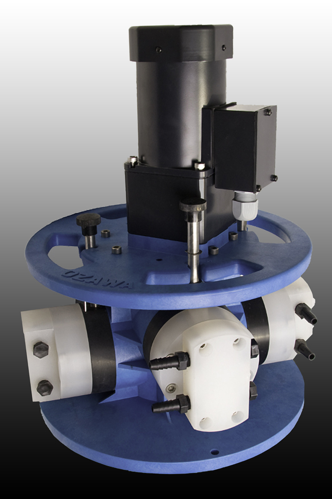
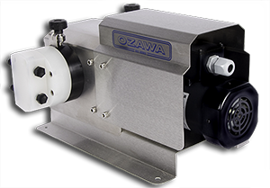
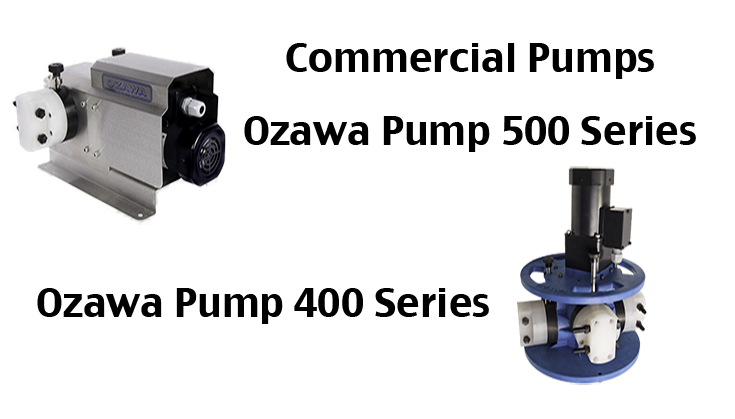

400 Series
The most versatile pump in the Ozawa line. Available in one to four-head configurations, the 400 series handles injection rates from ounces per hour up to 36 GPH — making it the go-to choice for mid- to large-scale vegetable farms, nurseries, and golf course irrigation systems.
Each head has five clearly marked adjustment positions in 20% increments. The 24V DC motor option supports computer-controlled and solar-powered fertigation programs.
400 Series Models
| Model | Pump Heads | Max Flow (GPH) | Max Pressure (PSI) | Chemicals Injected |
|---|---|---|---|---|
| 401-1 | 1 | 36 | 150 | 1 |
| 402-2 | 2 | 36 | 150 | 2 |
| 403-3 | 3 | 36 | 150 | 3 |
| 404-4 | 4 | 36 | 150 | 4 |
400 Series Technical Specifications
- Positive displacement piston pump — eccentric shaft and roller design
- Motor: 120V AC or 24V DC (variable speed, computer-controllable)
- Power: less than 100 watts total across all four heads at full output
- Flow range: ounces per hour up to 36 GPH; five adjustment positions per head (20% increments)
- Maximum discharge pressure: 150 PSI
- Self-priming — operates at any angle or orientation
- O-ring check valve design; sealed self-lubricating bearings — no scheduled maintenance
- Compatible with fertilizers, acids, soaps, waxes, chlorine, fish fertilizer
- Mounts to 2"–12" aluminum, steel, or PVC pipe with standard saddle clamps
500 Series
Built for the most demanding applications, the 500 series reaches 180 PSI and delivers up to 56 GPH in the Direct Adjustable Drive configuration. When you need maximum throughput for large pivot systems, high-pressure lines, or heavy-duty commercial operations, the 500 series is the answer.
The Direct Adjustable Drive model (505½) provides a continuously variable output from trace amounts up to 56 GPH — ideal for operations requiring fine-tuned injection ratios at high volumes.


500 Series Models
| Model | Pump Heads | Max Flow (GPH) | Max Pressure (PSI) | Notes |
|---|---|---|---|---|
| 502-1 | 1 | 46 | 180 | — |
| 504-2 | 2 | 40 | 180 | — |
| 506-2 | 2 | 54 | 180 | — |
| 505½ | 1 | 56 | 180 | Direct Adjustable Drive |
500 Series Technical Specifications
- Heavy-duty positive displacement piston pump
- Motor: 120V AC or 24V DC variable speed
- Maximum discharge pressure: 180 PSI
- Flow range: up to 56 GPH (505½ Direct Adjustable Drive)
- Self-priming — operates at any angle
- Sealed self-lubricating bearings — maintenance-free operation
- Compatible with the same chemical range as the 400 series
Controllers & Accessories
The following components integrate with both the 400 and 500 series for flow-paced and automated fertigation systems.
| Part Number | Component | Function |
|---|---|---|
| 410 | Controller | System control for automated injection programs |
| 420 VFD | Variable Frequency Drive | Precise motor speed control for proportional output |
| 450 | Flow Sensor | Water meter signal for flow-paced injection |
| 470 | Check Valve | Prevents back-siphon and flow reversal |
| 461 | Signal Splitter | Splits flow sensor signal to multiple controllers |